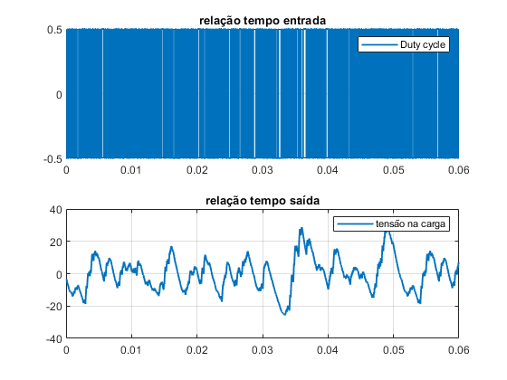
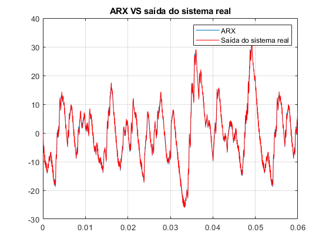
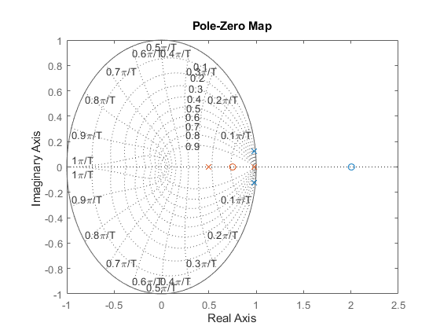

Contents
%Identificação ARX conversor BOOST %Luiz Felipe Souza - lince clear, clc %Parametrização Ts = 5.0e-5; L = 0.000551; Vs = 30; C = 0.000143; R = 15; k = 0.3; fs = 20000; num = [ -Vs/(R*C*(1-k)^2) , Vs/(L*C) ]; den = [ 1 , 1/(R*C) , ((1-k)^2)/(L*C) ]; Gs = tf(num, den);
Importação dos dados de saída e entrada
load("DataIdentboost.mat")
Nd = 300;
t = DadosBoost(1,1:end-Nd);
u = DadosBoost(2,Nd:end-1);
v = DadosBoost(3,Nd:end-1);
mu_u = mean(u); mu_v = mean(v); u = u - mu_u; v = v - mu_v; y = transpose(v);
relação gráfica de saída e entrada
figure(1) subplot(211) stairs(t,u, LineWidth=1.4), grid on title('relação tempo entrada'); legend('Duty cycle'); subplot(212) plot(t,v, LineWidth=1.4), grid on title('relação tempo saída'); legend('tensão na carga');

Construção matricial - regressores
Ns = numel(t); M = zeros(Ns-3,4); for n = 3:Ns phi = [y(n-1), y(n-2), u(n-1), u(n-2)]; M(n, :) = phi; end theta = M\y; a1 = theta(1); a2 = theta(2); b1 = theta(3); b2 = theta(4); ys = zeros(size(y)); ys(1:2) = y(1:2); yp = M * theta;
Comparação ARX VS saída do sistema.
figure(2) plot(t,y) hold on plot(t,yp,'r') legend('ARX','Saída do sistema real'); hold off grid on title('ARX VS saída do sistema real'); exportgraphics(figure(2), 'comparacao_arx.png', 'Resolution', 300);

Modelo ARX - Discreto
Gz = c2d(Gs, Ts ,'zoh') Be = [0, b1, b2]; Ae = [1, -a1, -a2]; %Gz = tf(B, A, Ts) Gze = tf(Be, Ae, Ts) figure(3) pzmap(Gz) zgrid hold on pzmap(Gze) hold off
Gz =
-0.9353 z + 1.875
---------------------
z^2 - 1.962 z + 0.977
Sample time: 5e-05 seconds
Discrete-time transfer function.
Gze =
-1.885 z + 1.414
----------------------
z^2 - 1.474 z + 0.4845
Sample time: 5e-05 seconds
Discrete-time transfer function.

Ajuste R2
R2 = 1 - sum((y - yp).^2)/sum((y - mean(y)).^2)
R2 =
0.9897